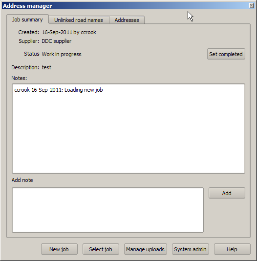

The job summary screen
See the overview for a high level overview of address uploads

The job summary screen is used to manage address uploads
The main tasks performed on this screen are:
- Start a new address upload job. This will open the new job dialog box
- Select an existing address upload job to continue working on.
- Open the upload management dialog to create and review landonline uploads.
- Open the system administration dialog to update system configuration information (addrss source types and suppliers)
- Set the job status to completed once all the addresses in the job have been processed. This will not be permitted if there are still addresses which are not linked to roads, or do not have a status set.
a name="addnote">Add a note to the job - notes can be added at any time